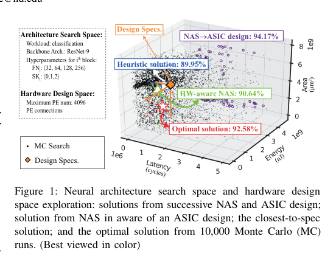
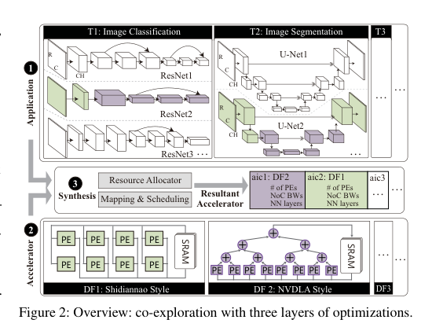
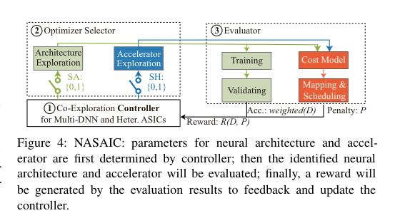
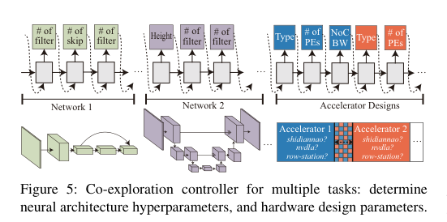
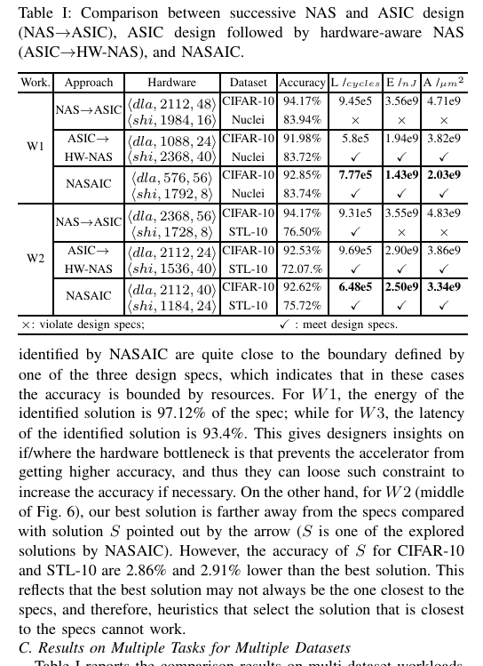
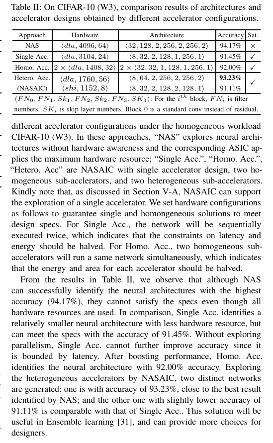
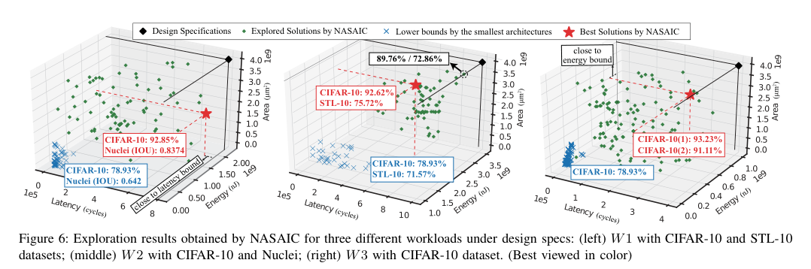

本报告由大模型自动生成，可能存在理解、归纳或数据转述错误；请以原论文为准。 Co-Exploration of Neural Architectures and Heterogeneous ASIC Accelerator Designs Targeting Multiple TasksLei Yang, Zheyu Yan, Meng Li, Hyoukjun Kwon, Liangzhen Lai, Tushar Krishna, Vikas Chandra, Weiwen Jiang, Yiyu Shi · Proceedings - ACM IEEE Design Automation Conference · 2020 · 原文 · PDF 报告模型：gemini-3.1-pro-preview / high 这是一篇关于共同探索（Co-Exploration）神经网络架构与异构专用集成电路（ASIC）加速器设计的学术论文。文章的日期背景为 2026 年之前（原文献发布于 2020 年）。本文主要解决在边缘设备上同时运行多个深度学习任务时，如何将寻找最优神经网络结构的技术与定制化底层硬件设计结合起来的问题。以下是逐章节的详细解析。 一、 绪论与问题背景问题背景与基础概念 近年来，神经网络架构搜索（NAS，Neural Architecture Search）已被广泛应用。NAS 是一种自动寻找最优深度神经网络（DNN）结构（例如层数、卷积核大小、通道数等超参数）的技术，旨在最大化模型的准确率。随着边缘计算的兴起，硬件感知（Hardware-aware）的 NAS 应运而生，它在搜索模型结构时会将目标硬件的延迟和能耗纳入考量。然而，现有的硬件感知 NAS 主要针对图形处理器（GPU）或现场可编程逻辑门阵列（FPGA）。 （为了帮助理解在此补充背景知识：GPU 和 FPGA 都属于具有相对固定计算模式或规则底层结构的通用/半通用平台。而专用集成电路 ASIC，Application-Specific Integrated Circuit，是为特定应用完全定制的芯片。ASIC 内部由多个处理单元（PE，Processing Element，通常包含乘加器和本地寄存器）按特定拓扑结构连接而成。数据在 PE、片上缓存和片外内存之间流动的方式被称为“数据流（Dataflow）”。由于 ASIC 没有固定的底层限制，设计自由度极高，能够提供无与伦比的能效和极低的延迟。） 当前面临的挑战 作者指出了将 NAS 应用于 ASIC 设计时面临的两个核心挑战： 第一，如何实现神经网络与 ASIC 加速器的“共同探索”。ASIC 的设计空间极其庞大，同样的 PE 数量可以组合出无数种拓扑结构和数据流，这使得在搜索神经网络结构的同时枚举底层硬件架构变得完全不可能。如图 1 所示，如果先用 NAS 搜出一个模型，再去为它设计 ASIC（图中圆形点）；或者先固定一个 ASIC，再去搜模型（图中三角形点），往往会导致最终结果要么违反用户设定的硬件约束（面积、能耗、延迟），要么准确率严重次优。 第二，如何在统一的硬件设计规格下，为多个任务同时识别多个神经网络架构。在增强现实（AR）眼镜等边缘设备上，目标检测、图像分割和分类等多个任务通常需要并行执行。不同的网络结构对数据流的偏好完全不同。例如，通道数大但特征图分辨率小的层适合某种数据流，而通道数小但分辨率大的层适合另一种数据流。这意味着单一数据流的加速器无法同时高效运行所有任务。  作者的解决思路 针对空间过大的问题，作者提出了一种“模板化”的思想。他们没有从零开始探索 ASIC 内部的微架构连线，而是基于工业界已经非常成功的 ASIC 设计（如 Shidiannao、NVDLA、Eyeriss），提取出它们独特的“数据流”作为模板（Template）。一旦选定了数据流模板并分配了计算资源，加速器的微架构就随之确定。这极大地缩小了硬件设计空间。针对多任务问题，作者提出将多个采取不同数据流模板的“子加速器”集成到同一个芯片中，形成异构加速器，并通过一个名为 NASAIC 的框架统一搜索网络超参数和硬件资源分配。 二、 问题定义与系统全貌在本节中，作者正式定义了软硬件协同探索的系统层级与优化目标。如图 2 所示，整个协同探索分为三个层级：应用层（Application）、加速器层（Accelerator）和综合层（Synthesis）。  应用层（多任务工作负载） 应用层定义了需要同时运行的多个 AI 任务。作者将包含 （无量纲整数，代表任务总数）个任务的工作负载集合定义为无量纲集合 ，其中下标 为任务索引。每个任务 对应一个神经网络架构 ，所有 构成集合 。 每一个网络架构定义为元组 ，其中下标 为任务或网络架构索引，取值范围为 到 ：
加速器层（异构 ASIC） （在此补充背景知识：片上网络 NoC，Network-on-Chip，是一种芯片内部各个计算节点间进行数据通信的路由网络，其带宽决定了数据搬移的速度上限）。 作者将异构 ASIC 加速器定义为由 （无量纲整数，代表子加速器总数）个子加速器构成的集合 ，其中下标 为子加速器索引。 每一个子加速器定义为元组 ，其中下标 为子加速器索引，取值范围为 到 ：
综合层（跨层映射与调度） 这一层是体系结构与底层物理代价建立联系的关键。作者定义了资源分配函数 来为每个子加速器确定数据流、分配 PE 和带宽。受限于芯片总资源，所有子加速器的 PE 总数必须小于等于设定的系统上限 （无量纲整数），总带宽必须小于等于总上限 （单位为 GB/s）。 同时，作者定义了映射函数 （表示将第 个网络的第 层放到第 个子加速器上执行，其中下标 为网络索引， 为层索引， 为子加速器索引，具体取值范围原文未说明）和调度函数 （决定该子加速器上各个层的执行顺序，其中下标 为子加速器索引）。 请注意，这里的“综合（Synthesis）”并非 EDA 领域将 RTL 转换为逻辑门网表的综合。作者在这里使用的是高层次的解析成本模型（Cost Model）映射，而非真实的物理综合，这是一种用以极大加快评估速度的建模妥协。 整体优化问题公式化 给定上述定义以及设计规格上限（延迟 周期数、能耗 纳焦耳 nJ、面积 平方微米 ），优化的目标是决定每个网络的超参数 、硬件资源分配 ，以及映射和调度方案 ，使得多任务的加权准确率达到最大，同时系统综合出的实际延迟 （单位为周期数 cycles）、实际能耗 （单位为 nJ）、实际面积 （单位为 ）满足 的严格约束。 三、 NASAIC 协同探索框架为解决上述公式化问题，作者提出了 NASAIC 框架。如图 4 所示，该框架由三个主要组件构成：协同探索控制器、优化器选择器和评估器。  1. 多任务协同探索控制器（Multi-Task Co-Exploration Controller） 控制器是框架的大脑，由一个强化学习驱动的循环神经网络（RNN）构成（如图 5 所示）。控制器不仅要预测多个神经网络的超参数，还要同时预测硬件的分配参数，从而实现真正的软硬件“共同探索”。 控制器的输出被划分为 个分段（Segment， 为无量纲整数）。前 个分段依次负责输出 个 DNN 任务的超参数（如卷积核数量）；后 个分段负责输出 个子加速器的硬件参数（如数据流类型、PE 数量等）。  控制器在每一个迭代回合（episode）中采样生成一组软硬件配置，送入下游评估后获得一个标量奖励信号 。随后，框架使用蒙特卡洛策略梯度算法（REINFORCE）更新控制器 RNN 的权重参数，其梯度计算公式如下： 这是一个标准的策略梯度公式。这里，从左至右定义各个符号：
2. 优化器选择器（Optimizer Selector） 作者观察到一个现实问题：评估硬件代价（使用解析模型，耗时极短）的速度远快于评估神经网络准确率（需要实际训练，耗时漫长）。为了加速搜索，作者引入了两个逻辑开关：（代表网络架构探索）和 （代表硬件设计探索），两者取值均为集合 。 框架在搜索时采取交替阻塞的非对称频率策略：先让 生成一组新的软硬件配置；然后在接下来的 （无量纲整数）步（steps）中，保持 ，即固定刚才搜到的网络结构不变，仅快速探索最匹配该网络的硬件硬件。如果在纯硬件探索阶段找不到任何满足约束的硬件，框架会直接丢弃该网络并终止其漫长的训练过程（Early Pruning，提前剪枝），从而极大地节省了算力时间。 3. 评估器（Evaluator）与跨层代价反馈 评估器分为两条路径：一条通过训练获得准确率，另一条通过映射和调度获得硬件代价。 第一条路径负责获取加权准确率。控制器生成的每个网络 会被从头训练，在验证集上得到准确率 。由于是多任务系统，整体表现由所有网络准确率的加权和定义，即公式 (2)： 这里，从左至右定义各个符号：
第二条路径负责评估架构层向 EDA/硬件层映射后的性能（延迟 、能耗 、面积 ）。这里，作者调用了现有的学术界硬件成本模型 MAESTRO 作为黑盒评估器。MAESTRO 可以根据给定的数据流模板和网络层形状，解析计算出具体的 （这一过程通过一种启发式调度算法求解器 HAP（optimal solver，单位原文未说明）来求解网络层在多个子加速器间的映射调度问题以求最小化能耗）。 基于得到的硬件指标，如果它们超出了用户设定的规格上限，系统必须给予惩罚。惩罚项由公式 (3) 定义： 这里，从左至右定义各个符号：
最终，评估器将两条路径的结果结合，生成用于更新控制器的综合奖励 ，由公式 (4) 定义： 这里，沿用之前的 （加权准确率）和 （惩罚值），新出现的符号为：
四、 实验评估实验设置与硬件约束 作者设计了三种混合任务负载（代号分别为 W1, W2, W3）来验证 NASAIC：
实验结果与分析 作者在表 1（Table I）中展示了 NASAIC 相比两类传统基线方法的优越性。 第一类基线是“NAS ASIC”（先不管硬件搜索最准的模型，再强行去配硬件）。结果显示，这种分离方法得到的解在所有测试场景下都会违反硬件设计规格（Specs）（在表 1 中标记为 ）。 第二类基线是“ASIC HW-NAS”（先通过蒙特卡洛随机选出一个符合硬件约束的 ASIC 配置，然后在这个固定硬件上运行硬件感知 NAS 搜模型）。虽然这种方法能满足硬件红线，但由于过早固定了硬件，它抹杀了不同模型适应不同数据流的潜力。例如在 W2 负载下，NASAIC 通过软硬件同时探索（Co-exploration），在满足所有约束的前提下，使 STL-10 的分类准确率比第二类基线高出了 3.65%。  表 2（Table II）进一步证明了“异构（Heterogeneous）”的必要性。在运行 W3 负载时，如果不进行硬件分区（只使用一个大加速器 Single Acc.），受限于延迟约束，模型准确率只能达到 91.45%；如果强行切分成两个完全相同数据流的同构加速器（Homo. Acc.），准确率提升到 92.00%；而 NASAIC 寻找到的“异构加速器”（一个采用 NVDLA 模板跑残差网络，一个采用 Shidiannao 模板跑轻量化部分），不仅满足硬件约束，还让准确率登顶至 93.23% 和 91.11%。  图 6（原文三维散点图）的实验现象证明了 NASAIC 能够精准地将搜索结果逼近资源规格的边界（黑色菱形，black diamond）。通过让结果贴近能量或延迟边界，框架成功榨干了硬件潜力以换取更高的模型精度。  五、 全文主线与局限性总结主线总结 这篇文章的逻辑主线非常清晰：最初面临的问题是现有的 NAS 无法高效覆盖自由度极大的定制化 ASIC 硬件，尤其是当边缘设备需要处理多任务并涉及多网络并行时，传统的单片/单一数据流加速器表现不佳。为了解决这个问题，作者引入了“数据流模板”这一最关键的先验知识来降维硬件设计空间，随后提出 NASAIC 框架。通过一个多分支的 RNN 控制器和非对称探索机制，该框架实现了网络超参数与异构底层资源的同步预测与分配。最终实验证明，这种协同探索能够有效找出既不违反严苛物理资源约束，又能针对具体任务取得高准确率的最优软硬件组合。 关键假设与局限性 然而，这些结论不能被过度推广，主要受限于以下几点：
|